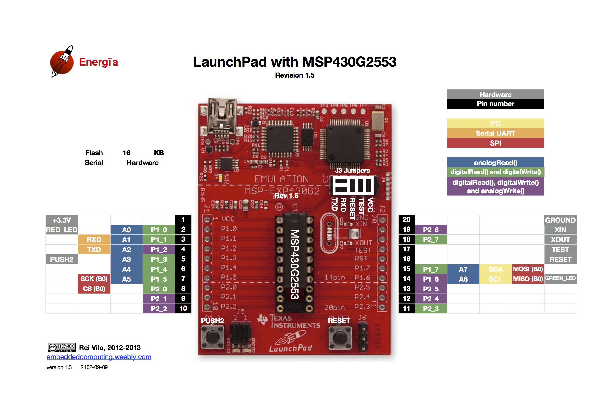
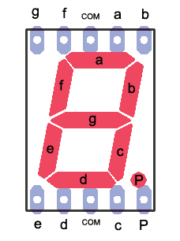
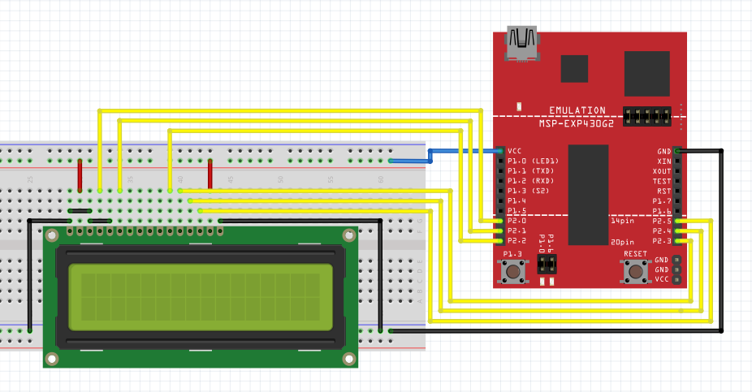
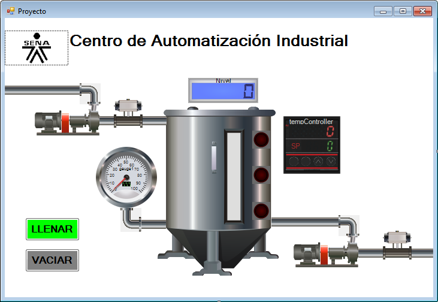

LA PLATAFORMA MSP430 LAUNCHPAD
La MSP430 es una familia de microcontroladores fabricados por Texas Instruments. Construido con una CPU de 16 bits, el MSP430 está diseñado para aplicaciones embebidas de bajo costo, sistemas inalámbricos y/o de ultra bajo consumo de energía.
La plataforma LAUNCHPAD permite programar y depurar proyectos basados en microcontroladores MSP430 sin necesidad de herramientas adicionales.
Todos los pines del microcontrolador MSP430 son fácilmente accesibles, permitiendo conectar tarjetas de expansión (BoosterPack) para adicionar conectividad con sensores, comunicación inalámbrica, etc.
Para conocer más detalles sobre su funcionamiento veamos el siguiente enlace, en dicha página el fabricante nos expone las especificaciones de la plataforma.
http://www.ti.com/ww/en/launchpad/launchpads-msp430-msp-exp430g2.html#tabs
Descarga e instalación
Descargar e instalar los drivers del sistema para el dispositivo (Ejecutar la aplicación para el sistema operativo adecuado DPinst.exe para Windows 32bit o DPinst64.exe para Windows 64 bit)
https://github.com/energia/Energia/raw/gh-pages/files/EZ430-UART.zip
Descargar el entorno integrado de desarrollo Energia y descomprimir (No se requiere instalación, es una aplicación portable):
http://energia.nu/downloads/downloadv3.php?file=energia-0101E0016-windows.zip
Para Windows 8 y 10 siga esta guía para deshabilitar la verificación de firma de drivers:
https://learn.sparkfun.com/tutorials/disabling-driver-signature-on-windows-8
Verique la posición de los jumpers de acuerdo con la siguiente imagen:

Tenga en cuenta que algunos pines pueden ser programados para realizar diferentes funciones, ser configurados como entrada o como salida.
Por ejemplo, el PIN 5 está direccionado como P1_3, identificado como PUSH2 dentro del entorno de programación energía.
El PIN 2 está direccionado como P1_0, identificado como LED_RED.
El PIN 14 está direccionado como P1_6, identificado como LED_GREEN.
void setup() {
pinMode(P2_0, OUTPUT);
}
void loop() {
digitalWrite(P2_0, HIGH);
delay(1000);
digitalWrite(P2_0, LOW);
delay(1000);
}
#include <math.h>
byte unidades = 0;
byte pins_P2[8] = {P2_0, P2_1, P2_2, P2_3, P2_4, P2_5, P2_6, P2_7};
void output_P2(byte cifra){
for(int i=0; i<8; i++){
digitalWrite(pins_P2[i], cifra&1<<i);
}
}
void setup(){
for(int p=0; p<8; p++){
pinMode(pins_P2[p], OUTPUT);
digitalWrite(pins_P2[p],LOW);
}
}
void loop(){
output_P2(unidades);
unidades++;
delay(500);
}
void setup() {
pinMode(P1_0, INPUT);
pinMode(P2_0, OUTPUT);
}
void loop(){
digitalWrite(P2_0, digitalRead(P1_0));
}
Entrada digital puerto
#include <math.h>
byte pins_P1[8] = {P1_0, P1_1, P1_2, P1_3, P1_4, P1_5, P1_6, P1_7};
byte pins_P2[8] = {P2_0, P2_1, P2_2, P2_3, P2_4, P2_5, P2_6, P2_7};
byte input_P1(){
byte cifra=0;
byte num;
for(int i=0; i<8; i++){
cifra=cifra+(digitalRead(pins_P1[i])*1<<i);
}
return cifra;
}
void output_P2(byte cifra){
for(int i=0; i<8; i++){
digitalWrite(pins_P2[i], cifra&1<<i);
}
}
void setup(){
for(int p=0; p<8; p++){ pinMode(pins_P1[p],INPUT_PULLDOWN); pinMode(pins_P2[p], OUTPUT); digitalWrite(pins_P2[p],LOW);
}
}
void loop(){
output_P2(input_P1());
}
Configuraciones: PULL_DOWN - PULL_UP
void setup() {
pinMode(P1_0, INPUT);
pinMode(P2_0, OUTPUT);
}
void loop(){
digitalWrite(P2_0, !digitalRead(P1_0));
}
void setup() {
pinMode(P1_0, INPUT);
pinMode(P1_1, INPUT);
pinMode(P2_0, OUTPUT);
}
void loop(){
digitalWrite(P2_0, digitalRead(P1_0)&&digitalRead(P1_1));
}
void setup() {
pinMode(P1_0, INPUT);
pinMode(P1_1, INPUT);
pinMode(P2_0, OUTPUT);
}
void loop(){
digitalWrite(P2_0, digitalRead(P1_0)||digitalRead(P1_1));
}
void setup() {
pinMode(P1_0, INPUT);
pinMode(P1_1, INPUT);
pinMode(P2_0, OUTPUT);
}
void loop(){
digitalWrite(P2_0, digitalRead(P1_0)^digitalRead(P1_1));
}
Interfaz de salida transistor BJT
Control motor paso a paso unipolar
Control motor paso a paso bipolar
Interfaz de salida optotransistor
Interfaz de salida transistor MOSFET
Arranque estrella-triángulo motor AC
Interfaz de entrada transistor BJT
Interfaz de entrada optotransistor
Visualización
Display 7 segmentos

Contador 0 - 9 sin decodificador
/** Display 7 segmenti per corso arduino.
segmenti:
a P2_0
b P2_1
c P2_2
d P2_3
e P2_4
f P2_5
g P2_6
*/
#define boton_inc P1_3 // Boton incremento
#define boton_dec P1_4 // Boton decremento
#define boton_reset P1_5 // Boton reset
boolean boton_inc_ant;
boolean boton_dec_ant;
byte unidades = 0;
byte seven_seg_digits[11][7] = {
{ 0,0,0,0,0,0,0 }, // = blank
{ 1,1,1,1,1,1,0 }, // = 0
{ 0,1,1,0,0,0,0 }, // = 1
{ 1,1,0,1,1,0,1 }, // = 2
{ 1,1,1,1,0,0,1 }, // = 3
{ 0,1,1,0,0,1,1 }, // = 4
{ 1,0,1,1,0,1,1 }, // = 5
{ 1,0,1,1,1,1,1 }, // = 6
{ 1,1,1,0,0,0,0 }, // = 7
{ 1,1,1,1,1,1,1 }, // = 8
{ 1,1,1,0,0,1,1 } // = 9
};
long segment_to_pin[7] = {P2_0, P2_1, P2_2, P2_3, P2_4, P2_5, P2_6};
void write_digit(byte cifra){
digitalWrite(segment_to_pin[0],s even_seg_digits[cifra+1][0]);
digitalWrite(segment_to_pin[1],s even_seg_digits[cifra+1][1]);
digitalWrite(segment_to_pin[2],s even_seg_digits[cifra+1][2]);
digitalWrite(segment_to_pin[3],s even_seg_digits[cifra+1][3]);
digitalWrite(segment_to_pin[4],s even_seg_digits[cifra+1][4]);
digitalWrite(segment_to_pin[5],s even_seg_digits[cifra+1][5]);
digitalWrite(segment_to_pin[6],s even_seg_digits[cifra+1][6]);
}
void setup(){
for (int p=0; p<8; p++)
{
pinMode(segment_to_pin[p], OUTPUT);
}
pinMode(boton_inc, INPUT_PULLUP);
pinMode(boton_dec, INPUT_PULLUP);
pinMode(boton_reset, INPUT_PULLUP);
write_digit(8);
delay(1000);
}
void loop(){
if ((digitalRead(boton_inc)!=boton_inc_ant))
{
if (digitalRead(boton_inc)==0)
{
if (unidades<9) {unidades++;}
}
delay(5);
boton_inc_ant = digitalRead(boton_inc);
}
//Programar acción boton_dec
//Programar acción boton_reset
if (digitalRead(boton_reset)==0)
{
unidades=0;
}
write_digit(unidades);
}
Contador 0 - 99 sin decodificador
Contador 0 - 99 multiplexado sin decodificador
Contador 0 - 9 con decodificador
Contador 0 - 99 con decodificador
LCD2x16
La pantalla LCD es otro dispositivo de despliegue de información muy versatil y viene en una gran cantidad de modelos y configuraciones. Sirven como ventana a datos, configuraciones o despliegue de información donde un LED no es suficiente.

Lo primero que debemos saber, es la conexión de la pantalla LCD según el tipo que vamos a usar y para esto consultaremos el “LCDpc1602h” (Hoja información) de una pantalla LCD genérica 2x16 es decir 2 filas de 16 caracteres cada una.
Las pantallas LCD son dispositivos que se puede dañar muy fácilmente, actualmente se encuentran varios modelos: 1X30, 4X16, 2X16 y de led, en vez de cristal líquido y todas trabajan de forma similar.

Al dorso de la pantalla veremos que los pines están numerados.

Dorso Pantalla LCD
En este modelo en particular de pantalla LCD, solo se marca el PIN 1 y el 16.
Identificar los pines no es gran problema, ahora debemos saber cómo conectarlos, para eso vamos a ver el siguiente diagrama.
Diagrama de la pantalla LCD |

Podemos dividir el diagrama en dos partes como se ve en la figura, la parte de "control y despliegue" (izquierda) y la parte de "alimentación y ajuste" (derecha).

El diagrama Power Supply (alimentación y ajuste) VSS sería el neutro (polaridad -) y VDD de +3.3V a +5V (según el modelo de la LCD), entre ellos una resistencia ajustable (potenciómetro) a V0 que nos servirá para ajustar el contraste de la pantalla.
El LED BKL (LED BACKLIGHT) lo podemos tomar como un circuito independiente, su función es de retroiluminar la pantalla, es decir, es para poder ver los dígitos en la oscuridad, A y K no por casualidad se comportan en cierto modo como un led normal, pero este tiene mayor consumo, se alimenta directamente a +4.5V o a +5V.
No es obligatorio conectar el (LED BACKLIGHT) para que funcione la LCD, como comentamos antes es un circuito independiente, lo interesante es que podemos usar un interruptor normal o uno mediante un circuito de conmutación (transistores o MOSFET) controlado por el mismo PIC para que solo cuando halla actividad (por ejemplo) este encendido (ya que este tiene un consumo considerable).
Para lo demás pines tenemos a continuación la descripción que nos da una hoja de datos de un fabricante ya que no hay mucho problema en lo que de conexión se trata.
|
Descripción de los pines y su función |
Manos a la obra!!!
En PIC-C CCS creamos un proyecto con las siguientes características:
* Micro-controlador PIC 18F4550.
* Frecuencia de reloj 20 MHz
Agregamos la librería #include <flex_lcd.c> que hace una función similar a la de un driver en una PC, pero esta vez entre el PIC y la LCD.
Para conocer como se debe conectar el LCD, abriremos la librería “flex_lcd.c”
Descripción de conexiones del LCD
En las primeras líneas podemos ver que se definen los pines del microcontrolador a los cuales irán conectados los pines del LCD, y serán éstos los que usaremos para diseñar nuestro circuito en Proteus ISIS.
En el circuito seleccionamos un PIC18F4550 y un LM016L (pantalla LCD 2x16), como en ejercicios anteriores algunas conexiones no se hacen por simplificar, pero eso no indica que, cuando vamos hacerlo en un Proto-Board no debamos hacerlas. (ej: conexión del pin V0 – contraste del LCD).
Diagrama del circuito

El ejemplo es muy simple para comenzar, sin embargo se ha documentado el código para hacerlo entendible:
/*
LiquidCrystal Library - Hello World
Demonstrates the use a 16x2 LCD display. The LiquidCrystal library works with all LCD displays that are compatible with the Hitachi HD44780 driver. There are many of them out there, and you can usually tell them by the 16-pin interface.
This sketch prints "Hello World!" to the LCD
and shows the time.
The circuit:
================================= LCD pin Connect to
---------------------------------
01 - GND GND, pot
02 - VCC +5V, pot
03 - Contrast Pot wiper
04 - RS Pin8 (P2.0)
05 - R/W GND
06 - EN Pin9 (P2.1)
07 - DB0 GND
08 - DB1 GND
09 - DB2 GND
10 - DB3 GND
11 - DB4 Pin10 (P2.2)
12 - DB5 Pin11 (P2.3)
13 - DB6 Pin12 (P2.4)
14 - DB7 Pin13 (P2.5)
15 - BL+ +5V
16 - BL- GND
=================================
Library originally added 18 Apr 2008 by David A. Mellis
library modified 5 Jul 2009
by Limor Fried (http://www.ladyada.net)
example added 9 Jul 2009 by Tom Igoe
modified 22 Nov 2010 by Tom Igoe
This example code is in the public domain.
http://www.arduino.cc/en/Tutorial/LiquidCrystal
*/
// include the library code:
#include <LiquidCrystal.h>
// initialize the library with the numbers of the interface pins
LiquidCrystal lcd(P2_0, P2_1, P2_2, P2_3, P2_4, P2_5);
void setup() {
// set up the LCD's number of columns and rows:
lcd.begin(16, 2);
// Print a message to the LCD.
lcd.print("hello, world!");
}
void loop() {
// set the cursor to column 0, line 1
// (note: line 1 is the second row, since counting begins with 0):
lcd.setCursor(0, 1);
// print the number of seconds since reset:
lcd.print(millis()/1000);
}
Comentarios:
Extraído parcialmente de: http://22xd.blogspot.com/2011/04/programando-pic-con-ccs-ejercicio-3-lcd.html
LCD4x20
LCD Grafico (GLCD)
Interrupción externa INT
Timer
El teclado matricial 4x4, que son los más utilizados en el desarrollo de proyectos con microcontroladores PIC y que tienen su aplicación en el ingreso de datos de manera manual por parte del usuario, en aquellos casos en que el empleo de pulsadores simples no es lo más apropiado, ya sea por la presentación final del producto o por la restricción del número de líneas de entrada de los microcontroladores PIC.
El teclado matricial 4x4 está constituido por una matriz de pulsadores dispuestos en filas (A,B,C,D) y columnas (1,2,3,4), con la intención de reducir el número de pines necesarios para su conexión. Las 16 teclas necesitan sólo 8 pines del microcontrolador, en lugar de los 16 pines que se requerirían para la conexión de 16 teclas independientes.


A cada tecla le corresponde una posición única en la matriz.
Su funcionamiento es muy sencillo, cuando se presiona una tecla, se conectan internamente la fila y columna correspondientes; por ejemplo, al presionar la tecla “6” se conectan la fila B y la columna 3. Si no hay ninguna tecla presionada, las filas están desconectadas de las columnas.

El esquema del circuito será el siguiente:
El código del programa será el siguiente:
Comentarios del programa:
Para facilitar la lectura del teclado matricial usaremos la librería kbd_matricial.c que se encarga de gestionar las líneas físicas (pines del microcontrolador) y contiene la función kbd_getc() que se encuentra implementada en ella.
La variable tecla es de tipo char, permitiendo almacenar en ella un caracter alfanumérico, el cual obtiene al llamar la función kbd_getc().
La función kbd_getc() devuelve cero (0) si no se ha pulsado ninguna tecla o el carácter ASCII que corresponde a la tecla pulsada.
Extraído parcialmente de:
http://www.programarpicenc.com/libro/cap08-teclado-matricial-4x4-microcontroladores-pic.html
EEPROM
La conversión Analógica a Digital que es capaz de hacer un PIC consiste en convertir un valor de tensión (voltaje) que conectemos a un PIN habilitado para ello, en un valor numérico proporcional a dicha tensión que podemos guardar en una variable y ser utilizado por nuestro programa del PIC.
Dicho de otra forma: Si entre un pin del PIC podemos tener una tensión, con respecto a GND, entre 0V y 5V y realizamos una conversión Analógico-Digital de ese pin con una precisión de 8 bits entonces el PIC puede "leer" esa tensión en 256 (2^8=256) valores distintos que nos devuelve como resultado de la lectura, siendo el 0 el correspondiente a los 0V y el 255 el correspondiente a los 5V, y todos los intermedios en "saltos" de 0,019V (5V/256).
Si en lugar de 8 bits estamos utilizando un PIC que tiene un conversor A/D de 10 bits de precisión entonces ese mismo rango de 0V a 5V podemos "leerlo" en 1024 (2^10=1024) valores distintos, siendo el "resultado" 0 el que corresponde a los 0V y el 1023 a los 5V. Cualquier valor intermedio nos devolverá un número equivalente con "pasos" de 0,0049V por valor.
Hemos visto que el mínimo que podemos convertir es 0V o tensión del nivel del Vss (GND) del PIC y 5V o tensión del nivel de alimentación Vcc del PIC.
Esto es así si no utilizamos los Voltajes de Referencia, porque si los utilizamos entonces las cosas pueden cambiar....
Imaginemos un dispositivo analógico que varía su tensión de salida entre 0V y 1V. Si le aplicamos la conversión A/D como antes con 8 bits de precisión entonces los valores que vamos a obtener son entre 0 y 51 (1*256/5V) con lo que desperdiciamos una parte muy importante del rango posible de conversión, entre 52 y 255 nunca nos va a aparecer como resultado de la misma.
Entonces el truco está en poner a 1V la patilla VRef+ del PIC con lo que la conversión A/D a realizar en lo que haya presente en nuestro pin a leer se va a efectuar en 256 pasos entre GND y VRef+, no entre GND y Vcc como antes, con lo que obtenemos un resultado 5 veces más preciso: 1V dividido en 256 partes con lo que cada número corresponde con 0,0039V.
Ahora, imaginemos que nuestro dispositivo analógico varía su tensión de salida entre 1V y 2V. Si utilizamos el primer ejemplo que vimos, conversión A/D entre 0V y 5V con 8 bits de precisión, entonces solo obtendremos números entre 51 y 102, perdiendo todos los valores inferiores y superiores a éstos.
Si utilizamos el ejemplo anterior a éste pero colocando el VRef+ a 2V entonces tendremos valores entre 128 y 255 pero ninguno inferior a 128 ya que nuestra tensión analógica no baja de 1V ....
Así que la solución está en utilizar otra patilla del PIC, en este caso para VRef-, o sea para ponerle la referencia de tensión mínima a partir de la cual vamos a convertir valores, que junto con la VRef+ tenemos el margen o rango de tensiones a convertir a gusto.
En este segundo ejemplo pondríamos VRef- a 1V y VRef+ a 2V con lo que tendríamos una conversión de 8 bits en la que el 0 correspondería a los 1V y el 255 a los 2V ...Todo esto se puede ver en el siguiente diagrama de bloques del conversor A/D de los PIC's de la familia 16F87X:

Como ejemplo del uso del conversor ADC del microcontrolador vamos a utilizar las funciones para leer el dato proveniente de un sensor en el rango de 0 a 5V.
Como funcionalidades mínimas haremos que sea capaz de leer una entrada entre 0 y 5V de manera que para 0V representará 0 ºC y 5V representará 100 ºC.
El esquema del circuito será el siguiente:
El código del programa será el siguiente:
Comentarios del programa:
El ejemplo está debidamente documentado, por lo cual su comprensión no reviste mayor dificultad.
Se debe tener especial atención al seleccionar el canal a leer:
set_adc_channel(0); esta instrucción selecciona el canal AN0
set_adc_channel(1); esta instrucción selecciona el canal AN1
set_adc_channel(2); esta instrucción selecciona el canal AN2… etc…
Temperatura = read_adc(); esta instrucción lee el valor análogo en el canal seleccionado previamente
Para observar la variación de la unidad medida se ha dispuesto un potenciómetro para simular el sensor de temperatura.
Extraído parcialmente de:
http://picmania.garcia-cuervo.net/conceptos.php#CONVAD01
Salida análoga PWM
Muchas veces nos gustaría controlar la cantidad física de una acción: qué tan brillantes son las luces, qué tan rápido se mueve un motor, cuantos grados girar, etc. En este caso estaremos hablando de salidas de tipo analógico, con este tipo de salidas podemos tener un grado de control sobre la variable, donde el resultado no solo se limitará a On-Off.

Como se puede observar en la figura, el voltaje promedio es el resultado de alternar el valor de salida de un pin entre 0 y 5 voltios con un ancho de pulso variable, durante un periodo de tiempo determinado.
Como la mayoría de los microcontroladores no pueden generar un voltaje (real) variable en sus pines de salida, una de las soluciones para resolver esta carencia es utilizar un truco electrónico que se basa en la modulación del ancho del pulso – Pulse Width Modulation - (PWM para abreviar).
La conversión digital a analógico que es capaz de hacer un PIC consiste en convertir un valor discreto en el ciclo de trabajo del PWM proporcional al valor de tensión (voltaje) que deseamos producir en un PIN habilitado para ello.
Dicho de otra forma: En un pin del PIC podemos tener una tensión, con respecto a GND, entre 0V y 5V obtenida de la tensión promedio generada por el ciclo de trabajo del PWM. Entonces el PIC puede "escribir" esa tensión en 100 valores distintos, siendo el 0 el correspondiente a los 0V y el 100 el correspondiente a los 5V, y todos los intermedios en "saltos" de 0,05 (5V/100).
Como ejemplo del uso de la conversión D/A vamos a utilizar las funciones para controlar la velociidad de un motor de corriente continua conectado al colector de un transistor bipolar NPN (TIP41).
Haremos que nuestro circuito sea capaz de realizar un conteo ascendente/descendente entre 0 y 1000 y que éste valor sea asignado al ciclo de trabajo del PWM para manipular el voltaje aplicado a la base del transistor.
Esquemático control de velocidad motor DC con PWM:
Programa control de velocidad motor DC con PWM:
Comentarios del programa:
La variable PWM se ha programado que su valor aumente o disminuya 10 unidades por cada pulsación. Se ha limitado el valor máximo del parámetro PWM a 1000 y el mínimo a 0 y que nunca rebase estos límites. .
Se debe tener especial atención al asignar el ciclo de trabajo al PWM, el cual debe ser un número entero comprendido entre 0 (0V) y 1000 (5V), es decir, el incremento en una unidad en el contador se verá reflejado como una variación de 0,05V a la salida del pin C2 del microcontrolador.
Extraído parcialmente de:
http://www.dtic.upf.edu/~jlozano/interfaces/interfaces5.html
Comunicación serial asíncrona (UART)
9.2 Sharp Develop example
Algunas referencias de microcontroladores PIC incluyen módulos para comunicación dentro de su hardware. El módulo para comunicaciones RS-232 se conoce también como UART.
Para este tipo de comunicación lo primero será configurarla mediante la siguiente directiva en la cabecera del programa:
#use rs232(baud=9600,bits=8,parity=N,xmit=PIN_C6,rcv=PIN_C7,errors)
Esto quiere decir que cada vez que queramos utilizar las funciones para enviar o recibir información utilizando el protocolo de comunicación serie RS-232 debemos haber incluido previamente esta directiva, que posibilita la comunicación del PIC con otro dispositivo.
En general habrá que usar un conversor de niveles basado en el MAX232 o similar.
El protocolo serie es una descripción "digital" (0/1) de lo que debe estar pasando en la línea (por ejemplo, 1 mientras se espera, 0 indica el bit de start, etc.), pero no especifica que voltajes representan el 0/1 lógicos.
Por ejemplo en los PIC se usa la convención (lógica) que el 0 lógico son 0V y el 1 lógico (línea alta) son 5V.
En el puerto serie de un PC (standard RS232) la relación lógica/voltajes está invertida. Un 0 lógico se representa con un voltaje entre 3 y 15V (12 es típico) y un 1 lógico por un voltaje negativo (entre -3 y -15V). Es por esto por lo que para comunicar PIC-PC necesitamos un Max232 o equivalente.
Las especificaciones de su tarjeta le dirán cuales son los voltajes asociados a su puerto serie. Si dice algo de RS232 tendrá que usar seguramente un buffer tipo MAX232.
Si nuestro PIC no tiene UART como es el caso del PIC 16f84A, CCS nos permite implementar la comunicación serie por software y de forma totalmente transparente para el programador. Sin embargo el utilizar un PIC con UART nos permite disponer de una serie de funcionalidades adicionales, como el empleo de interrupciones para controlar el envío y recepción de datos.
Si queremos realizar una comunicación serie utilizando la USART del PIC, las conexiones tendrán que ser a las siguientes: RC6 para la transmisión de datos y RC7 para la recepción de datos.
Como vemos la directiva #use RS232 admite una serie de parámetros que son los que van entre paréntesis separados por comas, estos son los siguientes:
baud con este parámetro establecemos la velocidad en baudios a la que queremos que se transmitan los datos por el puerto serie, 9600 es lo normal.
bits número de bits que utilizaremos en la transmisión, el estándar establece que pueden ser 8 ó 9, para la comunicación con microcontroladores con 8 son suficientes.
parity nos permite utilizar un bit de paridad para la comprobación de errores.
xmit ésta opción nos permite seleccionar la patilla del PIC por la cual saldrán los datos.
rcv ésta opción nos permite seleccionar la patilla del PIC por la cual PIC se recibirán los datos.
errors El PIC se sobrecargará al recibir 3 caracteres con la función getc(). Esta opción previene el apagado del módulo UART detectando la condición y reseteándolo.
Pero ¿de qué funciones disponemos para enviar y recibir datos desde y hacia nuestro PIC?.
Para éste propósito disponemos de múltiples funciones
Para enviar solamente un caracter tenemos: putc()
Para enviar una cadena de caracteres: printf()
La forma de hacer la llamada a la función printf es la siguiente:
printf(cadena de caracteres,valores);
Los datos se enviaran por el puerto serie al pin que hayamos definido en la directiva #use RS232, en esta llamada vemos que tenemos la cadena de caracteres limitada por las comillas dobles y separado por una coma, como tercer parámetro el nombre de la variable i1 que habíamos declarado previamente. En la cadena de caracteres vemos que aparece el carácter de % seguido de la letra d, ese es un carácter especial para la función y lo que le indica a la función es que en esa posición muestre el valor de la variable i1, la d le indica a la función que represente ese valor en formato de número entero. Podemos representar el valor de la variable en diferentes formatos según se muestra en la tabla de abajo:
c |
Caracter |
s |
Cadena ó caracter |
u |
Entero sin signo |
d |
Entero con signo |
Lu |
Entero largo sin signo |
Ld |
Entero largo con signo |
x |
Entero Hexadecimal (minúsculas) |
X |
Entero Hexadecimal (mayúsculas) |
Lx |
Entero largo Hexadecimal (minúsculas) |
LX |
Entero largo Hexadecimal (mayúsculas) |
f |
Número real en coma flotante truncado |
g |
Número real en coma flotante con redondeo |
e |
Número real en formato exponencial |
w |
Entero sin signo con decimales insertados. Especifica dos números para n. La 1ª cifra indica el total y la 2ª el número de decimales |
Si quisiésemos mostrar el valor de más de una variable lo haríamos de la siguiente forma:
printf("El valor i1 es: %d el de i2: %d y el de i3: %d",i1,i2,i3);
Vamos con la última llamada a la función del 1º ejemplo:
printf (lcd_putc,"El valor de i1 es: %d",i1);
En esta llamada hemos incluido el primer parámetro y hemos puesto el nombre de la función lcd_putc, está función está definida en la librería LCD.C que trae el compilador para ayuda del manejo de los dispositivos LCD y que hemos incluido en nuestro programa por medio de la directiva #include <lcd.c>, vemos que la librería está encerrada entre los símbolos de <> esto le indica al compilador que busque la librería en el directorio en que se instalo el compilador, si copiáramos esa librería en otro directorio tendríamos que indicarle la ruta completa, pero esta vez encerrada entre comillas dobles.
Las secuencias de escape se utilizan para representar caracteres o acciones especiales.
printf("Esto es una cadena\r");
como parámetro incluimos una cadena de caracteres constante que termina en (\r), esa barra invertida junto con la r se le llama secuencia de escape y le está diciendo al compilador que al final de la cadena introduzca un retorno de carro (tecla enter).
En la tabla de abajo se muestran las secuencias de escape que tenemos disponibles para utilizar con la función printf:
\r |
Retorno de carro |
\t |
Tabulador |
\' |
Comilla simple |
\" |
Comillas dobles |
\\ |
Barra invertida |
\? |
Símbolo de interrogación |
\0 |
Caracter nulo |
\% |
Símbolo Tanto por ciento |
\b |
Retroceder un caracter |
Para recibir solamente un caracter tenemos: getc(), getch() y getchar(). Las tres hacen lo mismo por lo que podemos usarlas indistintamente.
Estas funciones esperan un carácter por la patilla del PIC que hayamos definido en la directiva #use RS232 con el parámetro rcv.
Pues vamos a ver nuestro primer ejemplo acerca del uso de estas funciones:
además de la función printf esta directiva permite el uso de otras funciones para la entrada y salida de datos serie como: getc, getchar, gets, puts y kbhit que iremos viendo poco a poco, pero la más importante para la salida de datos sin duda es printf, porque nos permite formatear la salida de esos datos de la forma que nosotros queramos.
Cada vez que por el pin configurado en la directiva #use rs232 como rcv se reciba nueva información, actuará la interrupción por recepción RS232 anteriormente habilitada y el programa saltará inmediatamente a la función int_RDA donde se encuentra el código que debe ejecutarse, en este caso, mostrar la información recibida por LCD.
Durante la simulación es muy conveniente que el micro nos mande mensajes, así como en un programa de PC normal con la ayuda de la función printf(), para este caso se puede conectar la terminal virtual de ISIS a la línea TX del micro que nos va a mandar la información y, con un simple printf() el programa va a mandar esa cadena por el puerto serial.
Manos a la obra!!!
En PIC-C CCS creamos un proyecto con las siguientes características:
* Micro-controlador PIC 18F4550.
* Frecuencia de reloj 20 MHz
|
Agregamos la directiva #use rs232(baud=9600,bits=8,parity=N,xmit=PIN_C6,rcv=PIN_C7,errors)
|
Extraído parcialmente de: http://www.aquihayapuntes.com/programacion-pic-en-c.html?start=7
Comunicación I2C
I²C es un bus de comunicaciones en serie. Su nombre viene de Inter-Integrated Circuit (Circuitos Inter-Integrados). La versión 1.0 data del año 1992 y la versión 2.1 del año 2000, su diseñador es Philips. La velocidad es de 100Kbits por segundo en el modo estándar, aunque también permite velocidades de 3.4 Mbit/s. Es un bus muy usado en la industria, principalmente para comunicar microntroladores y sus periféricos en sistemas integrados (Embedded Systems) y generalizando más para comunicar circuitos integrados entre si que normalmente residen en un mismo circuito impreso.
La principal característica de I²C es que utiliza dos líneas para transmitir la información: una para los datos y por otra la señal de reloj. También es necesaria una tercera línea, pero esta sólo es la referencia (masa). Como suelen comunicarse circuitos en una misma placa que comparten una misma masa esta tercera línea no suele ser necesaria.
Las líneas se llaman:
SDA: datos
SCL: reloj
GND: tierra
Las dos primeras líneas son drenador abierto, por lo que necesitan resistencias de pull-up.
Los dispositivos conectados al bus I²C tienen una dirección única para cada uno. También pueden ser maestros o esclavos. El dispositivo maestro inicia la transferencia de datos y además genera la señal de reloj, pero no es necesario que el maestro sea siempre el mismo dispositivo, esta característica se la pueden ir pasando los dispositivos que tengan esa capacidad. Esta característica hace que al bus I²C se le denomine bus multimaestro.
Las transacciones en el bus I2C tienen este formato:
| start | A7 A6 A5 A4 A3 A2 A1 | R/W | ACK | ... DATA ... | ACK | stop | idle |
- El bus esta libre cuando SDA y SCL están en estado lógico alto.
- En estado bus libre, cualquier dispositivo puede ocupar el bus I²C como maestro.
- El maestro comienza la comunicación enviando un patrón llamado "start condition". Esto alerta a los dispositivos esclavos, poniéndolos a la espera de una transacción.
- El maestro se dirige al dispositivo con el que quiere hablar, enviando un byte que contiene los siete bits (A7-A1) que componen la dirección del dispositivo esclavo con el que se quiere comunicar, y el octavo bit (A0) de menor peso se corresponde con la operación deseada (L/E), lectura=1 (recibir del esclavo) y escritura=0 (enviar al esclavo).
- La dirección enviada es comparada por cada esclavo del bus con su propia dirección, si ambas coinciden, el esclavo se considera direccionado como esclavo-transmisor o esclavo receptor dependiendo del bit R/W.
- El esclavo responde enviando un bit de ACK que le indica al dispositivo maestro que el esclavo reconoce la solicitud y está en condiciones de comunicarse.
- Seguidamente comienza el intercambio de información entre los dispositivos.
- El maestro envía la dirección del registro interno del dispositivo que se desea leer o escribir.
- El esclavo responde con otro bit de ACK
- Ahora el maestro puede empezar a leer o escribir bytes de datos. Todos los bytes de datos deben constar de 8 bits, el número máximo de bytes que pueden ser enviados en una transmisión no está restringido, siendo el esclavo quien fija esta cantidad de acuerdo a sus características.
- Cada byte leído/escrito por el maestro debe ser obligatoriamente reconocido por un bit de ACK por el dispositivo maestro/esclavo.
- Se repiten los 2 pasos anteriores hasta finalizar la comunicación entre maestro y esclavo.
- Aun cuando el maestro siempre controla el estado de la línea del reloj, un esclavo de baja velocidad o que deba detener la transferencia de datos mientras efectúa otra función, puede forzar la línea SCL a nivel bajo. Esto hace que el maestro entre en un estado de espera, durante el cual, no transmite información esperando a que el esclavo esté listo para continuar la transferencia en el punto donde había sido detenida.
- Cuando la comunicación finaliza, el maestro transmite una "stop condition" para dejar libre el bus.
- Después de la "stop condition", es obligatorio para el bus estar idle durante unos
microsegundos.
El código del kernel de Linux para el soporte I2C está separado en varias piezas lógicas:
- I2C chip driver (maneja uno de los chips conectados al bus I2C, tanto si se comporta como maestro o como esclavo)
- I2C bus driver
- I2C algorithm driver
- I2C core (la parte genérica del subsistema de I2C)
*extraído de http://es.wikipedia.org/wiki/I%C2%B2C
Un ejemplo de dispositivo que hace uso de ésta interfaz son las memorias EEPROM I2C, las cuales han ganado poco a poco un espacio en el hardware de los equipos electrónicos hasta transformarse en uno de los medios de almacenamiento de información más populares por su practicidad y sencillez de manejo. Tener la posibilidad de almacenar datos de diversa índole en una memoria no volátil, es una característica importante de los equipos que les permite la desconexión prolongada de cualquier suministro energético y conservar durante mucho tiempo información valiosa que de otro modo, se perdería al desconectar un sistema. También conocidas como memorias de protocolo “serie” las 24CXX son infaltables en cualquier equipo electrónico de consumo masivo.

Algunas de las características dignas de mencionar, pueden ser las que a continuación enumeramos:
- Pueden ser escritas y borradas de forma eléctrica = Electrically Erasable Programable Read Only Memory
- Están garantizadas para 1 millón de ciclos de escritura/lectura.
- Pueden llegar a retener la información sin ser alimentadas durante cientos de años.
- Se organizan por páginas para facilitar su direccionamiento y almacenamiento de la información.
- Utilizan para su funcionamiento una tensión única (5Volts o 3,3Volts)
- Son compatibles con el protocolo serial I2C (Marca registrada de Philips)
- Bajísimo costo.
- Amplia variedad de encapsulados para adaptar el modelo necesario, de acuerdo al tamaño de la aplicación.
Veamos las características de una de éstas memorias:


Veamos una aplicación con un ejemplo:
Vamos a copiar el siguiente código ejemplo que nos proporciona el compilador:
Comprobamos los parámetros de comunicación de los dispositivos en simulación, verificando con la herramienta I2C debugger:
Real Time Clock DS1307
El DS1307 Real-Time-Clock Serie, es un dispositivo de bajo consumo de energía, completo con código binario decimal (BCD), reloj/calendario más 56 bytes de NV SRAM.
Dirección y datos son transferidos a través de 2 hilos serie, bus bi-direccional. El reloj/calendario provee información de segundos, minutos, horas, día, fecha, mes y año.
El final de fecha de mes se ajusta automáticamente durante meses menores de 31 días, incluyendo correcciones para el año bisiesto. El reloj funciona en cualquier formato de 24 horas o en 12 horas con indicador AM/PM. El DS1307 tiene incorporado un circuito de sensor de tensión que detecta fallas de energía y cambia automáticamente al suministro de batería de respaldo.
CARACTERÍSTICAS
° Reloj en tiempo real (RTC) Cuenta segundos, Minutos, horas, fecha del mes, mes, día de la semana, y año con año bisiesto. Compensación válida hasta 2100.
° 56-Byte, con respaldo de batería, no volátil (NV) de RAM para almacenamiento de datos.
° Interface Serie I2C.
° Onda-Cuadrada programable de la señal de salida.
° Detector Automático Fallo-Energía y Circuito Conmutación.
° Consume menos de 500nA en la batería -- Modo de copia de seguridad con el oscilador funcionando.
° Rango de temperatura Industrial Opcional: -40 ° C a +85 ° C
° Disponible en 8-Pin Plástico DIP o SO
° Reconocido Underwriters Laboratory (UL)
El DS1307 funciona como un dispositivo esclavo en el bus serie. El acceso se obtiene mediante la aplicación de una condición de START (Inicio) y la prestación de un código de identificación del dispositivo seguido de una dirección de registro. Se puede acceder a registros posteriores de forma secuencial hasta que es ejecutada una condición STOP.
Cuando VCC cae por debajo de 1,25 x VBAT un dispositivo en curso rescinde el acceso y restablece el contador de dirección de dispositivo. En este momento, pueden no ser reconocidas entradas al dispositivo para evitar que se escriban datos erróneos en el dispositivo por fuera de tolerancia del sistema. Cuando VCC cae por debajo de VBAT el dispositivo conmuta a batería de baja corriente modo de seguridad. Tras el encendido, el dispositivo conmuta de la batería a VCC VCC cuando es mayor que VBAT + 0,2 V y reconoce las entradas cuando VCC es mayor de 1,25 x VBAT. El diagrama de bloques de la Figura 1 muestra los principales elementos del RTC serie.
Veamos una aplicación con un ejemplo:
Vamos a copiar el siguiente código ejemplo que nos proporciona el compilador:
Comprobamos los parámetros de comunicación de los dispositivos en simulación, verificando con la herramienta I2C debugger:
USB
Diseñar la interfaz visual del proyecto formativo utilizando los controles que puede descargar del siguiente enlace:

Control con microcontrolador
Proyectos